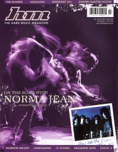
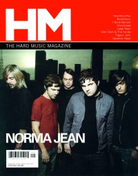

Norma Jean
|  |
| July 2002 HM |
 |
| March 2005 HM |
 |
| September 2006 HM |
| August 2013 HM |
Media coverage:
- Jul 2002 in HM "On The Road With Norma Jean", by Fay Jakymec
- Mar 2003 in 7ball "Live Music: Orlando, The Social", by Clark Orr
- Apr 2003 in Nor'Easter "Concert Review: @ The Skoolhouse, Harrisburg, PA", by Chris Gatto
- Sep 2004 in HM "Live Report: Cornerstone, The Alarm, Sleeping at Last, Norma Jean, As I Lay Dying", by Doug Van Pelt
- Mar 2005 in HM "Pinch Me I'm Dreaming", by Doug Van Pelt
- May 2005 in Relevant "Standing Strong After The Storm", by Andy Argyrakis
- Jul 2005 in CCM "Hardviews: Jeremy Camp Meets Norma Jean", by Jeremy Camp
- Sum 2006 in Uprise Zine "Featured Bands: Norma Jean"
- Sep 2006 in HM "I See Dead People", by David Stagg
- Sep 2006 in HM "Hardnews: Quick & Concise: Norma Jean"
- Dec 2006 in CCM "What's In A Name?", by Tony Shore
- Jan 2007 in HM "Classic Moments: Norma Jean", by Doug Van Pelt
- Jan 2007 in Relevant "Norma Jean Redeemed", by Danny Miller, Cara Davis
- Sep 2008 in HM "When Momma Doesn't Know Best", by Brian Quincy Newcomb
- Sep 2008 in HM "Poster: Norma Jean"
- Jan 2010 in HM "Hardnews: Quick & Concise: Norma Jean Sign To Razor & Tie"
- Jul 2010 in HM "Norma Jean", by Doug Van Pelt
- Jan 2012 in HM "Live Report: Norma Jean Pizza Riot 2011 Tour", by Doug Van Pelt
- Aug 2013 in HM "This is a Romance", by Robert Houston
- Sep 2013 in HM "The Jump: HM Live: Summer Slaughter Tour, Houston, TX", by Barry Stagg
Albums & reviews:
2002: Bless the Martyr and Kiss the Child
- Sep 2002 in HM, by Jeffrey Ellinger
- Sep 2002 in CCM, by Chris McNeece
- Apr 2005 in Heaven's Metal, by Kern County Kid
- May 2005 in HM, by Chris M. Short
- Jul 2006 in HM, by Doug Van Pelt
- Nov 2006 in HM, by Andrew Schwab
- Nov 2006 in CCM, by Doug Van Pelt
- Dec 2006 in Heaven's Metal, by Adam P Newton
- Win 2006 in Uprise Zine, by Sir Jorge
- Sep 2008 in HM, by Dan Frazier
- Oct 2008 in Heaven's Metal, by Chris Gatto
- Nov 2008 in YouthWorker, by Matt Conner
- Jul 2010 in HM, by Nathan Doyle
- Aug 2013 in HM, by Dan MacIntosh
Award Summary (Nominations / Wins)
Dove Awards- 2006 Dove Awards
- Recorded Music Packaging: O' God, The Aftermath
- 2005 Grammy Awards
- Best Recording Package: O' God, The Aftermath
© 2011 CMnexus. Last updated April 2021. Contact: editor -AT- cmnexus -DØT- org About